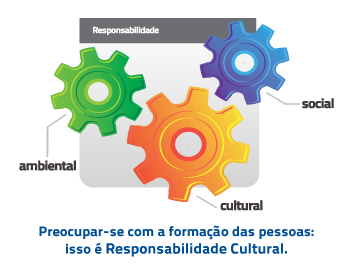

Comunicação Pública é toda informação divulgada em um espaço aberto ao diálogo com a sociedade. Para a comunicação ser chamada Pública, é preciso que ela vise o interesse coletivo, que não tenha interesses políticos ou comerciais naquilo que é transmitido e que possua independência editorial.
É necessário, também, distinguir Comunicação de Informação. A primeira, como exemplo, seria a troca de conhecimento, o espaço para diálogo, para interação, ou seja, uma via com mão dupla. Informação poderia ser entendida como uma pista de sentido único: a notícia é transmitida para alcançar determinado público, sem esperar retorno do que foi dito ou informado.
A complementaridade dos sistemas privado, público e estatal é uma garantia constitucional. Só assim é possível manter uma nação democrática e garantir o equilíbrio no campo da comunicação social, entendendo a importância de cada um no processo comunicativo.
E foi para consolidar a Comunicação Pública Brasileira que nasceu a EBC. A empresa complementa os sistemas privado e estatal, oferecendo ao público um espaço de difusão de conhecimento e colaborando na formação de uma sociedade mais crítica e informada.
Com sede em Brasília e filiais no Rio de Janeiro, São Paulo, São Luís, Porto Alegre e Tabatinga, a empresa criada em 2007 gerencia um sistema público de comunicação que é composto por sete emissoras de rádio, TV Brasil, TV Brasil Internacional, Radioagência Nacional, Agência Brasil e Portal EBC.
Com uma infraestrutura de ponta, está pronta para prestar todo tipo de serviço em comunicação com alto padrão de qualidade. Possui modernos estúdios e equipamentos de TV e Rádio, gerenciamento de mídias 24 horas e uma equipe altamente preparada para cumprir com eficiência o seu trabalho.
Na criação da empresa, foi estabelecida a valorização da produção independente como importante ferramenta de inclusão social. Ela permite a divulgação da cultura brasileira e estimula novos talentos com um espaço único, aberto para a participação de toda a sociedade.
Diretoria de Negócios e Serviços
A Diretoria de Negócios e Serviços é responsável pela área de negócios, marketing e prestação de serviços para entidades públicas e privadas, contribuindo para a geração de receitas próprias para a EBC.
A Lei 11.652/2008 dispensa as organizações públicas de fazer licitação para contratar a EBC.
Responsabilidade Cultural: a base de uma sociedade
A Responsabilidade Ambiental e a Responsabilidade Social são temas recorrentes no mundo e presentes na composição de várias empresas. É fundamental, nos dias de hoje, preocupar-se com o desenvolvimento sustentável. Entretanto, deve-se investir em cultura, o que possibilita o crescimento pessoal e humano, a compreensão de valores fundamentais. Logo, responsabilidade e cultura, juntas, estimulam e favorecem o comprometimento com a ideia de sustentabilidade.
 A EBC preza pelo desenvolvimento da capacidade de discernimento social, ambiental e política nas pessoas. Em todos seus veículos, uma grade de programas voltada à cultura brasileira preenche a lacuna de atrações de boa qualidade deixada pelas emissoras comerciais. Com o foco no desenvolvimento humano, o conteúdo veiculado preocupa-se tanto com a informação passada, quanto com quem irá recebê-la, e traz como base de sustentação de toda sua política a Responsabilidade Cultural.
Para calcular o valor de inserção de uma Publicidade em sua grade, a EBC utiliza uma Política de Captação de Recursos que vai além do viés puramente econômico e considera características sociais, culturais e políticas, que influenciam a qualidade da vida humana.
Assim, opta por substituir o Índice de Potencial de Consumo - IPC, utilizado no cálculo convencional das emissoras comerciais, pelo Índice de Desenvolvimento Humano - IDH, que analisa além da renda, a expectativa de vida e a taxa de escolaridade. Esse índice, atrelado à audiência e à cobertura, formam uma política de captação diferenciada.
Investir na EBC é associar a marca a uma programação de qualidade, voltada à formação de uma sociedade mais crítica e informada. E esse investimento tem retorno garantido, pois tudo o que é captado é revertido integralmente em nossos veículos para levar ainda mais cultura à população.